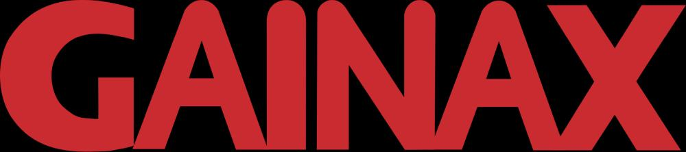

GAINAX Co., Ltd. is a Japanese anime studio famous for productions such as Neon Genesis Evangelion, Royal Space Force, Gunbuster, Nadia: The Secret of Blue Water, Kare Kano, FLCL, Magical Shopping Arcade Abenobashi, and Gurren Lagann, which have garnered critical acclai and been commercially successful. Evangelion has reportedly grossed over 150 billion yen, or approximately US$1.2 billion.In a discussion at the 2006 Tekkoshocon, Matt Greenfield claimed Evangelion had grossed over US$2 billion; Takeda reiterated in 2002 that "It sold record numbers of laserdiscs in Japan, and the DVD is still selling well today,", as well as for their association with award-winning anime director and studio co-founder Hideaki Anno. The company is headquartered in Koganei, Tokyo.
Until Neon Genesis Evangelion, Gainax typically worked on stories created in-house, but the studio has increasingly developed anime adaptations of existing manga like Kareshi Kanojo no Jijou and Mahoromatic. Series produced by Gainax are often known for their controversial twist endings.The Animage Anime Grand Prix has been awarded to Gainax for Nadia: The Secret of Blue Water in 1991, Neon Genesis Evangelion in 1995 and 1996, and The End of Evangelion in 1997.
Films
Cutie Honey (2004)
Evangelion: Death and Rebirth (1997)
Gekijōban Tengen Toppa Gurren Lagann (2007)
Gunbuster vs. Diebuster (2006)
Kiyotaka Suzuki (2007)
Mahiro Maeda (2007)
Masayuki (1997)
Nadia: The Movie (1991)
Production I.G (Rebirth) (1997)
Rebuild of Evangelion (2006)
Revival of Evangelion (1999)
Royal Space Force: The Wings of Honnêamise (1987)
The End of Evangelion (1997)
Zero Century (2019)
Series
Anime Tenchou (2002)
Appleseed (1988)
Beat Shot (1989)
Casshan: Robot Hunter (1993)
Circuit no Ohkami 2 Modena no Tsurugi (1990)
Corpse Princess (2008)
Debutante Detective Corps (1996)
Diebuster (2004)
FLCL (2000)
Gunbuster (1988)
Gurren Lagann (2007)
Hanamaru Kindergarten (2010)
He Is My Master (2005)
Hideaki Anno (2003)
Hiroki Sato (1998)
His and Her Circumstances (1998)
Honō no Tenkōsei (1991)
K.O. Beast (1992)
Magica Wars (2014)
Magical Shopping Arcade Abenobashi (2002)
Mahjong Hishō-den: Naki no Ryū (1988)
Mahoromatic (2001)
Medaka Box (2012)
Medaka Box Abnormal (2012)
Melody of Oblivion (2004)
Modern Love's Silliness (1999)
Money Wars (1991)
Nadia: The Secret of Blue Water (1990)
Neon Genesis Evangelion (1995)
Oruchuban Ebichu (1999)
Otaku no Video (1991)
Panty & Stocking with Garterbelt (2010)
Petite Princess Yucie (2002)
Re: Cutie Honey (2004)
Shouji Saeki (Specials) (2001)
Stella Women’s Academy, High School Division Class (2013)
Submarine 707R (2003)
The Chocolate Panic Picture Show (1985)
The Mystic Archives of Dantalian (2011)
This Ugly yet Beautiful World (2004)
Wish Upon the Pleiades (2011)